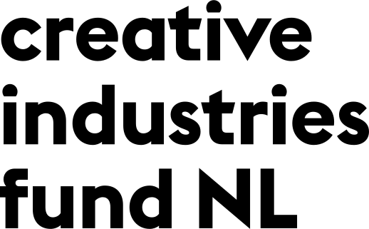
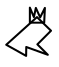

Copy this Book is an artist’s guide to copyright, written for makers. Both practical and critical, this book will guide you through the concepts underlying copyright and how they apply in your practice.
How do you get copyright? For what work? And for how long? How does copyright move across mediums, and how can you go about integrating the work of others? Because they get copyright too!
Copy this Book will detail the concepts of authorship and original creation that underlie our legal system. This way, it will equip you with the conceptual keys to participate in the debate on intellectual property today.
This sharp and useful book shines a light on the rights of all artists to protect—and share—their work. Eric Schrijver has produced an essential guide for navigating the new Commons and the old laws of copyright control.
— Ellen Lupton, curator and critic
Onomatopee
Willemstraat 27
5611 HB Eindhoven
How do you create an original expression? That’s not simply an artistic question, it’s a legal question. In an audio-visual performance, Eric Schrijver will show artistic creation as it happens in from the perspective of the law, charting exactly the threshold of originality, where ideas become expressions; and, on the other hand, where incidental reproduction and abstract inspiration become infringements of the rights of others.
Beursschouwburg
Auguste Ortsstraat 20-28
1000 Brussels
An audio-visual performance, followed by a round-table discussion with law scholar Julien Cabay, artist Eleanor Ivory Weber, and publisher/curator Freek Lomme (Onomatopee). Moderator: Julie Van Elslande.
Caveat is a collective research project reflecting and acting on the ecology of artistic practice.
Made possible thanks to
the Creative Industries Fund NL

Layout and graphics made with a mix of software including Inkscape, Scribus and html2print, a free layout software developed by OSP — thanks Alexandre Leray, Ludivine Loiseau and Sarah Magnan for your advice!
